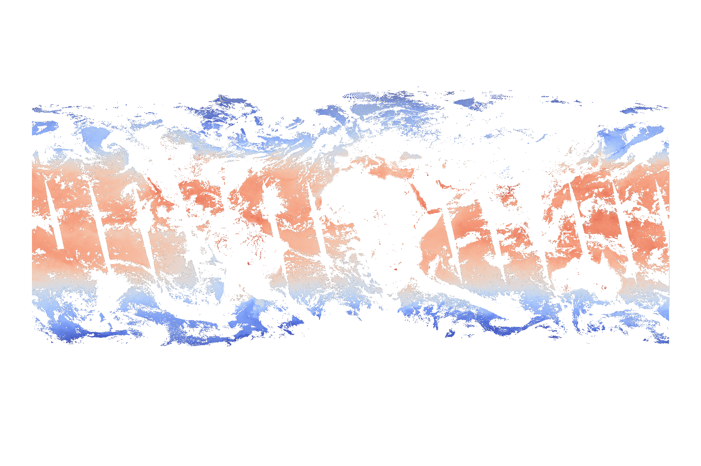
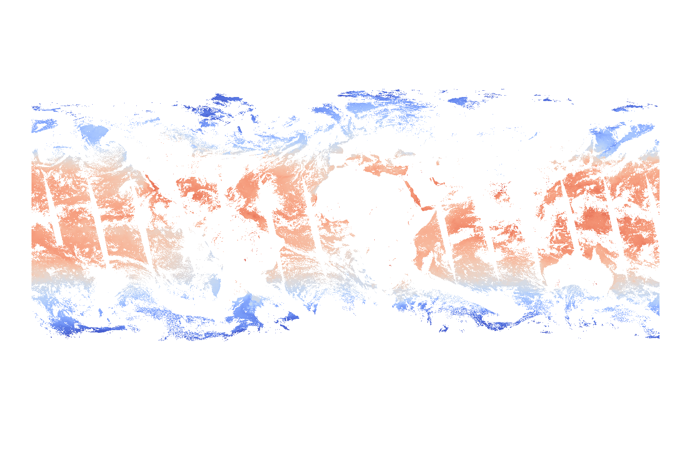

Waterpark — HEALPix Data Hub¶
Sea surface temperature seen by MODIS AQUA, remapped to HEALPix level 10.
Waterpark is a task force effort at DKRZ to convert climate and Earth observation datasets onto a common HEALPix grid and serve them as multi-resolution Zarr pyramids1 from S3 object storage. The unified grid enables efficient cross-dataset analysis, ML training pipelines, and interactive visualisation without per-dataset regridding at access time.
Currently available Datasets¶
Remapping methodology¶
All datasets should be remapped using pre-computed, reusable ESMF weight files applied via sparse matrix multiplication. Weight generation is a one-time cost per source grid; application runs at near-memory-bandwidth speed using batched cuSPARSE on GPU or batched SciPy on CPU.
| Variable type | Method | Rationale |
|---|---|---|
| Continuous fields (SST, temperature, wind, radiation, …) | Conservative | Area-weighted averaging preserves integrals and handles sub-pixel variability correctly. |
| Discrete / categorical fields (land-sea masks, land cover, soil type, …) | Nearest neighbour | Preserves class labels without creating non-physical intermediate values. |
The target HEALPix level for each dataset is chosen as the next level whose characteristic pixel spacing is coarser than the source resolution, avoiding oversampling. Lower pyramid levels are derived by nested coarsening (reshape + nanmean), not by repeated remapping.
Technical details
- Weight generation uses ESMF (
ESMF_RegridWeightGenunder MPI for large grids, ESMPy in-memory for moderate grids). - All HEALPix geometry is computed on a perfect sphere, consistent with ESMF's internal overlap calculation and with the geocentric coordinates used by climate models.
- Weight application supports three backends selected automatically: cuSPARSE / GPU (via CuPy), Numba (fused CSR kernel), and batched SciPy (BLAS-accelerated sparse matmul).
- The tooling is provided by the
grid-doctorPython package.
Benchmark for conservative remapping of HP Level 10 on NVIDIA GH200
The example below outlines the full pipeline of conservative remapping on a 4x NVIDIA Grace Hopper 200 Superchip node (288 CPUs and 856 GB RAM, 4 GPUs 382 GB) using CuPy and ESMF with 64 openmpi ranks. The dataset that was regridded and uploaded on s3 was one year of MODIS-AQUA at roughly 2km resolution (HEALPix level 10).
from dask.diagnostics.progress import ProgressBar
from getpass import getuser
from pathlib import Path
import grid_doctor as gd
# --- 1. Open source data ---
dset = gd.cached_open_dataset(
Path("/pool/data/ICDC/ocean/modis_aqua_sst/DATA/daily/2025").rglob("*.nc"),
chunks={"lat": -1},
)
# --- 2. Generate reusable weights (one-time) ---
weights_dir = Path(
"/scratch/{u[0]}/{u}/healpix-weights".format(u=getuser())
)
resolved_level = gd.resolution_to_healpix_level(
gd.get_latlon_resolution(dset)
)
%time weights_file = gd.cached_weights(
dset,
level=resolved_level,
cache_path=weights_dir,
nproc=64,
prefer_offline=True,
)
# Wall time: ~2 min 30 s (Grace CPUs, 64 MPI ranks)
# --- 3. Build multi-resolution pyramid ---
pyramid = gd.create_healpix_pyramid(
dset,
max_level=resolved_level,
weights_path=weights_file,
backend="cupy",
)
# --- 4. Verify ---
with ProgressBar():
hp = pyramid[resolved_level].isel(time=slice(0, 10)).load()
# Wall time: ~13 s (Hopper GPU)
# --- 5. Write to S3 ---
s3_options = gd.get_s3_options(
"https://s3-example.org",
Path("~/.s3-credentials.json").expanduser(),
)
%time gd.save_pyramid(
pyramid,
"/icon-dream/healpix/icdc/modis/aqua",
s3_options,
mode="w",
)
# Wall time: ~1 h 25 min (Hopper GPU)
The result is displayed below:


Datasets¶
Observations & reanalysis¶
ICDC — Integrated Climate Data Center
Status: In Progress
Satellite and in-situ derived climate data records curated by the ICDC at Universität Hamburg.
| Property | Value |
|---|---|
| Source resolution | varies |
| HEALPix level | varies |
| Temporal coverage | 2002 – present (daily) |
| Variables | TBD |
S3 store: s3://icdc
Example: icdc/healpix/atmosphere/IMERG/PT30M/level_9
<xarray.Dataset> Size: 587GB
Dimensions: (time: 11664, cell: 3145728)
Coordinates:
* time (time) datetime64[ns] 93kB 2025-01-0...
* cell (cell) int64 25MB 0 1 ... 3145727
crs float64 8B ...
latitude (cell) float64 25MB dask.array<chunksize=(98304,), meta=np.ndarray>
longitude (cell) float64 25MB dask.array<chunksize=(98304,), meta=np.ndarray>
Data variables:
calibrated_precipitation (time, cell) float32 147GB dask.array<chunksize=(1, 3145728), meta=np.ndarray>
precipitation_qualityindex (time, cell) float32 147GB dask.array<chunksize=(1, 3145728), meta=np.ndarray>
precipitation_randomerror (time, cell) float32 147GB dask.array<chunksize=(1, 3145728), meta=np.ndarray>
probability_of_liquid_precipitation (time, cell) float32 147GB dask.array<chunksize=(1, 3145728), meta=np.ndarray>
Attributes: (12/33)
Conventions: CF-1.6
title: GPM_3IMERGHH: NASA Global Precipitation Measu...
summary: See https://disc.gsfc.nasa.gov/datasets/GPM_3...
institution: Producer: NASA Global Precipitation Measureme...
creator_url: https://gpm.nasa.gov/missions/GPM ; https://w...
creator_name: NASA Global Precipitation Measurement Mission...
... ...
comment: This is a reduced data set. Not included (but...
references: 1) Tan, J., G. J. Huffman, D. T. Belvin, E. J...
citation: Huffman, G.J., E.F. Stocker, D.T. Bolvin, E.J...
healpix_nside: 512
healpix_level: 9
healpix_order: nested
ERA5 — ECMWF Reanalysis v5
Status: Available
The ERA5 global atmospheric reanalysis produced by ECMWF, covering 1940 to present on a 0.25° regular latitude-longitude grid (~31 km). Provides hourly estimates of a large number of atmospheric, land, and oceanic climate variables.
| Property | Value |
|---|---|
| Source resolution | 0.25° (~31 km) |
| HEALPix level | 7 (nside = 128, ~27 arcmin) |
| Temporal coverage | 1940 – present (hourly) |
| Variables | T2m, Precip, |
S3 store: s3://era5
Notes: time freq: cmor, level.zarr
Example: era5/PT1H/level_7
<xarray.Dataset> Size: 1TB
Dimensions: (time: 754752, cell: 196608)
Coordinates:
* time (time) datetime64[ns] 6MB 1940-01-01 ... 2026-02-05T23:00:00
* cell (cell) int64 2MB 0 1 2 3 4 ... 196603 196604 196605 196606 196607
crs float64 8B ...
latitude (cell) float64 2MB dask.array<chunksize=(49152,), meta=np.ndarray>
longitude (cell) float64 2MB dask.array<chunksize=(49152,), meta=np.ndarray>
Data variables:
pr (time, cell) float32 594GB dask.array<chunksize=(48, 196608), meta=np.ndarray>
tas (time, cell) float32 594GB dask.array<chunksize=(48, 196608), meta=np.ndarray>
Attributes:
CDI: Climate Data Interface version 1.9.6 (http://mpimet.mpg.d...
history: Thu Mar 23 23:49:59 2023: cdo -s -z zip_9 mergetime /scra...
institution: European Centre for Medium-Range Weather Forecasts
Conventions: CF-1.6
license: Contains modified Copernicus Atmosphere Monitoring Servic...
tracking_id: d5b13485-16f3-5f65-8dfd-cf03615bcc01
creation_date: 2023-03-23T23:27:08Z
CDO: Climate Data Operators version 1.9.6 (http://mpimet.mpg.d...
healpix_nside: 128
healpix_level: 7
healpix_order: nested
Model intercomparisons & campaigns¶
EERIE — Eddy-Rich Earth System Models
Status: Available
EERIE is an EU Horizon Europe project running coupled climate simulations at ocean-eddy-resolving resolution (< 10 km ocean, < 25 km atmosphere). The project aims to understand the role of ocean mesoscale eddies in the climate system and provide high-fidelity projections.
| Property | Value |
|---|---|
| Source resolution | ~5 km (model-dependent) |
| HEALPix level | 9 |
| Models | TBD |
| Variables | T2m, Precip, |
S3 store: s3://eerie
Notes: Pseudo directory for experiments. More metadata
Example eerie/eerie-hist-1950-v20240618_P1M_mean_9.zarr
<xarray.Dataset> Size: 20GB
Dimensions: (time: 780, cell: 3145728, crs: 1)
Coordinates:
* time (time) datetime64[ns] 6kB 1950-01-31T23:59:59 ... 2014-12-31T23:...
* crs (crs) float32 4B 0.0
Dimensions without coordinates: cell
Data variables:
pr (time, cell) float32 10GB dask.array<chunksize=(12, 262144), meta=np.ndarray>
ts (time, cell) float32 10GB dask.array<chunksize=(12, 262144), meta=np.ndarray>
DYAMOND — DYnamics of the Atmospheric general circulation Modeled On Non-hydrostatic Domains
Status: Available
DYAMOND is a model intercomparison of global storm-resolving simulations at 2.5–5 km resolution. Includes both summer (2016) and winter (2020) experiment phases with output from ICON, IFS, NICAM, MPAS, GEOS, SAM, SCREAM, SHiELD, and UM.
| Property | Value |
|---|---|
| Source resolution | 2.5–5 km |
| HEALPix level | 10–11 |
| Temporal coverage | 40-day windows (summer 2016, winter 2020) |
| Variables | T2m, Precip, |
S3 store: s3://dyamond
Example dyamond/icon-sap-5km/PT15M/level_10.zarr
<xarray.Dataset> Size: 399GB
Dimensions: (time: 3961, cell: 12582912)
Coordinates:
* time (time) datetime64[ns] 32kB 2020-01-20 ... 2020-03-01T06:00:00
* cell (cell) int64 101MB 0 1 2 3 ... 12582909 12582910 12582911
crs float64 8B ...
latitude (cell) float64 101MB dask.array<chunksize=(4194304,), meta=np.ndarray>
longitude (cell) float64 101MB dask.array<chunksize=(4194304,), meta=np.ndarray>
Data variables:
pr (time, cell) float32 199GB dask.array<chunksize=(1, 4194304), meta=np.ndarray>
tas (time, cell) float32 199GB dask.array<chunksize=(1, 4194304), meta=np.ndarray>
Attributes: (12/14)
CDI: Climate Data Interface version 2.0.0rc2 (https...
number_of_grid_used: 15
grid_file_uri: http://icon-downloads.mpimet.mpg.de/grids/publ...
uuidOfHGrid: 0f1e7d66-637e-11e8-913b-51232bb4d8f9
source: git@gitlab.dkrz.de:icon/icon-aes.git@6b5726d38...
institution: Max Planck Institute for Meteorology
... ...
references: see MPIM/DWD publications
CDO: Climate Data Operators version 2.0.0rc2 (https...
cdo_openmp_thread_number: 4
healpix_nside: 1024
healpix_level: 10
healpix_order: nested
nextGEMS — next Generation Earth Modelling Systems
Status: Available
nextGEMS is an EU Horizon 2020 project developing km-scale coupled Earth system models. Multi-decadal simulations with ICON and IFS-FESOM at ocean-eddy-permitting resolution, providing a testbed for next-generation climate projections.
| Property | Value |
|---|---|
| Source resolution | ~5–10 km |
| HEALPix level | 10 |
| Models | ICON |
| Variables | T2m, Precip, |
S3 store: s3://nextgems/
Notes:* Subfolder for time frequencies, more metadata
Example nextgems/ngc4008_PT15M_10.zarr
ICON-DREAM — DWD Reanalysis
Status: Available
ICON-DREAM is a regional and global reanalysis effort by the German Weather Service (DWD) using the ICON modelling framework. It produces high-resolution atmospheric reanalysis fields on the native ICON triangular mesh.
| Property | Value |
|---|---|
| Source grid | ICON unstructured (triangular) |
| HEALPix level | 8 |
| Variables | T2m, Precip, |
S3 store: s3://icon-dream
Notes:* Consistent places
Example /icon-dream/healpix/icon-dream-global/hourly/level_8.zarr
<xarray.Dataset> Size: 2TB
Dimensions: (time: 137169, cell: 786432)
Coordinates:
* time (time) datetime64[ns] 1MB 2009-12-31T22:00:00 ... 2025-08-30T2...
* cell (cell) int64 6MB 0 1 2 3 4 ... 786427 786428 786429 786430 786431
latitude (cell) float64 6MB dask.array<chunksize=(786432,), meta=np.ndarray>
longitude (cell) float64 6MB dask.array<chunksize=(786432,), meta=np.ndarray>
Data variables:
t2m (time, cell) float64 863GB dask.array<chunksize=(10, 786432), meta=np.ndarray>
tp (time, cell) float64 863GB dask.array<chunksize=(10, 786432), meta=np.ndarray>
Attributes:
Conventions: CF-1.7
GRIB_centre: edzw
GRIB_centreDescription: Offenbach
GRIB_edition: 2
GRIB_subCentre: 255
healpix_level: 8
healpix_nside: 256
healpix_order: nested
history: 2026-03-27T08:35 GRIB to CDM+CF via cfgrib-0.9.1...
institution: Offenbach
ORCESTRA — Organised Convection and EarthCARE Studies over the Tropical Atlantic
Status: Available
ORCESTRA is a coordinated field campaign (2024) combining aircraft, ship, and satellite observations over the tropical Atlantic to study organised deep convection and validate EarthCARE retrievals. Includes HALO, ATR-42, and METEOR observations alongside high-resolution ICON simulations.
| Property | Value |
|---|---|
| Source resolution | Campaign-dependent |
| HEALPix level | TBD |
S3 store: s3://orchestra
Notes: More sub folders
Example /orchestra/Basic_Halo_Measurement_and_Sensor_System_BAHAMAS_data.zarr
<xarray.Dataset> Size: 5MB
Dimensions: (time: 55628)
Coordinates:
* time (time) datetime64[ns] 445kB 2024-08-16T07:19:00 ... 2024-09-23T2...
height float64 8B ...
Data variables:
Dauer (time) int64 445kB dask.array<chunksize=(55628,), meta=np.ndarray>
DD (time) int64 445kB dask.array<chunksize=(55628,), meta=np.ndarray>
FF (time) float64 445kB dask.array<chunksize=(55628,), meta=np.ndarray>
Lat (time) float64 445kB dask.array<chunksize=(55628,), meta=np.ndarray>
Long (time) float64 445kB dask.array<chunksize=(55628,), meta=np.ndarray>
RH (time) float64 445kB dask.array<chunksize=(55628,), meta=np.ndarray>
RR_SRM (time) float64 445kB dask.array<chunksize=(55628,), meta=np.ndarray>
Tro1 (time) int64 445kB dask.array<chunksize=(55628,), meta=np.ndarray>
Trs (time) int64 445kB dask.array<chunksize=(55628,), meta=np.ndarray>
TT (time) float64 445kB dask.array<chunksize=(55628,), meta=np.ndarray>
VVV (time) int64 445kB dask.array<chunksize=(55628,), meta=np.ndarray>
Attributes:
creator_email: Martin.Stelzner@dwd.de, daniel.klocke@mpimet.mpg.de
creator_name: Martin Stelzner, Daniel Klocke
featureType: trajectory
history: Converted to Zarr by Lukas Kluft (lukas.kluft@mpimet.mpg.de)
keywords: precipitation amount, precipitation gauge, precipitation ...
license: CC-BY-4.0
platform: RV METEOR
project: ORCESTRA, BOW-TIE
summary: The rain gauge has an upper and a lateral collecting surf...
title: Rain gauge measurements during METEOR cruise M203
CMIP6 — Coupled Model Intercomparison Project Phase 6
Status: Available
CMIP6 is the latest phase of the international model intercomparison providing the scientific basis for IPCC assessment reports. Dozens of climate models at resolutions from ~25 km to ~250 km, covering historical simulations, future projections, and targeted experiments.
| Property | Value |
|---|---|
| Source resolution | ~25–250 km (model-dependent) |
| HEALPix level | 5 - 6 |
| Variables | T2m, Precip, |
S3 store: s3://cmip6 |
Example cmip6/healpix/cmip6/historical-r1i1p1f1/noresm2-mm/PT6H/level_5.zarr
<xarray.Dataset> Size: 19GB
Dimensions: (time: 94900, lat: 192, bnds: 2, lon: 288, cell: 12288)
Coordinates:
* time (time) object 759kB 1950-01-01 03:00:00 ... 2014-12-31 21:00:00
* lat (lat) float64 2kB -90.0 -89.06 -88.12 -87.17 ... 88.12 89.06 90.0
* lon (lon) float64 2kB 0.0 1.25 2.5 3.75 ... 355.0 356.2 357.5 358.8
* cell (cell) int64 98kB 0 1 2 3 4 5 ... 12283 12284 12285 12286 12287
crs float64 8B ...
height float64 8B ...
latitude (cell) float64 98kB dask.array<chunksize=(12288,), meta=np.ndarray>
longitude (cell) float64 98kB dask.array<chunksize=(12288,), meta=np.ndarray>
Dimensions without coordinates: bnds
Data variables:
lat_bnds (time, lat, bnds) float64 292MB dask.array<chunksize=(14600, 192, 2), meta=np.ndarray>
lon_bnds (time, lon, bnds) float64 437MB dask.array<chunksize=(14600, 288, 2), meta=np.ndarray>
pr (time, cell) float64 9GB dask.array<chunksize=(14600, 12288), meta=np.ndarray>
tas (time, cell) float64 9GB dask.array<chunksize=(14600, 12288), meta=np.ndarray>
time_bnds (time, bnds) object 2MB dask.array<chunksize=(1, 2), meta=np.ndarray>
Attributes: (12/54)
Conventions: CF-1.7 CMIP-6.2
activity_id: CMIP
branch_method: Hybrid-restart from year 1200-01-01 of piControl
branch_time: 0.0
branch_time_in_child: 0.0
branch_time_in_parent: 438000.0
... ...
table_id: 6hrPlev
table_info: Creation Date:(24 July 2019) MD5:0bb394a356ef9...
title: NorESM2-MM output prepared for CMIP6
tracking_id: hdl:21.14100/19ec4c56-4a33-4abb-a992-efe6324676bd
variable_id: pr
variant_label: r1i1p1f
Open decisions¶
Can we define an appropriate naming convention?
Suggestion: <bucket>/healpix/<experiment-compaign>/<model>/<freq>/level_X.zarr"
Naming conventions can be quite different for different datasets, but we can still aim at having a number four directory levels. If those four levels don't guarantee unique paths the directory names themselves can be adjusted to from uniq name patterns such as:
<bucket>/healpix/<product>/<instrument-level>/<freq>/level_X.zarr
<bucket>/healpix/<product-experiment>/<model-ensemble>/<freq>/level_X.zarr
The output time frequency freq should follow ISO 8601 standard.
Where to store cached weight files?
Weight files are reusable across runs for the same source grid and target level. The weight files with their grid signature should be stored at the following location:
ls /work/ks1387/healpix-weights
weights_0ba7e6dca9ba1ae9.nc weights_3051722bc32a01e5.nc weights_46fdfc6feb8ea520.nc weights_d9c2730b22295f4a.nc
weights_2aff1785f62b0254.nc weights_3a28f272e1fb6024.nc weights_901fbfc4a3ce2458.nc
To make sure that the weight files are getting reproducible and reusable
stored use cache_path=/work/ks1387/healpix-weights weights generation.
Zarr format: v2 or v3?
Some clients (gdal, zarrita) still require Zarr v2. Zarr v3 is the future standard but ecosystem support is still catching up.
Current decision: Write Zarr v2 with consolidated metadata until gridlook supports v3.
Roadmap¶
Completed¶
- Conservative remapping pipeline (
grid-doctor) with GPU acceleration - 1st round of Datasets uploaded
Next steps¶
- Operationalise the remapping pipeline (reproducible batch jobs)
- Set up shared weight-file cache on Lustre
- Automatic tape archival and retrieval of Zarr stores
- STAC catalogue integration for data discoverability
- Freva databrowser registration
- Documentation of the full process and methodology
-
Zarr stores multidimensional arrays in chunked form, which works well with object storage. ↩